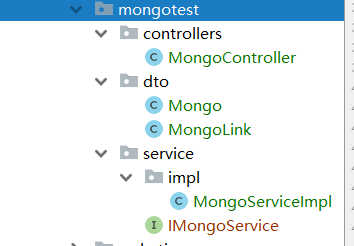
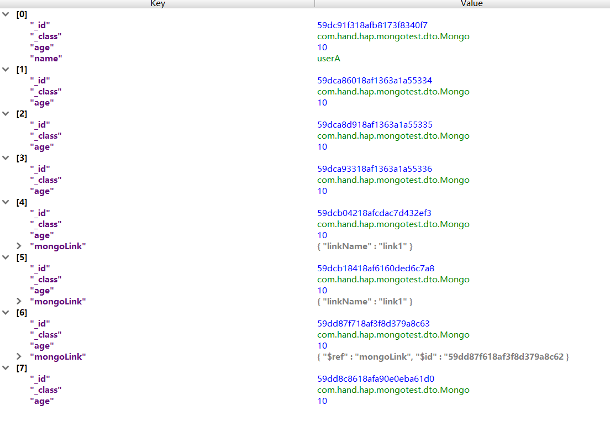

MongoDB 集成
HAP使用 spring-data-mongodb 进行对MongoDB的访问。
1 版本说明
示例使用1.10.7.RELEASE版本的spring-data-mongodb（需要spring版本最低4.3.11.RELEASE）
HAP在3.20之后升级spring版本为4.3.11.RELEASE(不支持1.10.7以上版本的spring-data-mongodb)
2 配置说明
在pom文件中添加
<dependency>
<groupId>org.springframework.data</groupId>
<artifactId>spring-data-mongodb</artifactId>
<version>1.10.7.RELEASE</version>
</dependency>
添加application-mongodb.xml文件
(参考文档) https://docs.spring.io/spring-data/mongodb/docs/current/reference/html/#mongo.mongo-xml-config
<?xml version="1.0" encoding="UTF-8"?>
<beans xmlns="http://www.springframework.org/schema/beans"
xmlns:xsi="http://www.w3.org/2001/XMLSchema-instance"
xmlns:mongo="http://www.springframework.org/schema/data/mongo"
xmlns:context="http://www.springframework.org/schema/context"
xsi:schemaLocation="http://www.springframework.org/schema/beans http://www.springframework.org/schema/beans/spring-beans.xsd http://www.springframework.org/schema/data/mongo http://www.springframework.org/schema/data/mongo/spring-mongo.xsd http://www.springframework.org/schema/context http://www.springframework.org/schema/context/spring-context.xsd">
<context:property-placeholder location="classpath:config.properties"/>
<mongo:mongo host="${mongo.host}" port="${mongo.port}">
<mongo:options connections-per-host="${mongo.connections-per-host}"
threads-allowed-to-block-for-connection-multiplier="${mongo.threads-allowed-to-block-for-connection-multiplier}"
connect-timeout="${mongo.connect-timeout}"
max-wait-time="${mongo.max-wait-time}"
auto-connect-retry="${mongo.auto-connect-retry}"
socket-keep-alive="${mongo.socket-keep-alive}"
socket-timeout="${mongo.socket-timeout}"
slave-ok="${mongo.slave-ok}"
write-number="${mongo.write-number}"
write-timeout="${mongo.write-timeout}"
write-fsync="${mongo.write-fsync}"/>
</mongo:mongo>
<mongo:db-factory id="mongoDbFactory"
mongo-ref="mongo"
dbname="${mongo.dbname}"
username="${mongo.username}"
password="${mongo.password}"/>
<bean id="simpleMongoTemplate" class="org.springframework.data.mongodb.core.MongoTemplate">
<constructor-arg name="mongoDbFactory" ref="mongoDbFactory"/>
</bean>
</beans>
3 使用说明
3.1 项目结构

3.2 dto
public class Mongo implements Serializable {
private static final long serialVersionUID = 1L;
@Id
private String id;
private String name;
private int age;
private String password;
@DBRef
/** mongodb的注解，文档之间建立引用关联关系，可以认为是关系型数据库中的外键，
* 需要在关联类中声明@Id（org.springframework.data.annotation.Id）
**/
private MongoLink mongoLink;
//省略 set()... get()..
}
public class MongoLink {
@Id
private String MongoId;
private String linkName;
//省略 set()... get()..
}
3.3 service
public interface IMongoService extends ProxySelf<IMongoService> {
//添加
void insert(Mongo object);
//根据条件查找
Mongo findOne(Map<String, Object> params);
//查找所有
List<Mongo> findAll(Map<String, Object> params);
//根据pojo查找
List<Mongo> find(Mongo mongo);
//修改
void update(Map<String, Object> params);
//根据条件删除
void remove(Map<String, Object> params);
}
3.4 impl
@Service
public class MongoServiceImpl implements IMongoService{
@Autowired
MongoTemplate simpleMongoTemplate;
@Override
public void insert(Mongo object) {
//如果使用ref则需要先将MongoLink插入数据库
Optional.ofNullable(object.getMongoLink()).ifPresent(v->{
simpleMongoTemplate.insert(v);
});
simpleMongoTemplate.insert(object);
}
@Override
public Mongo findOne(Map<String, Object> params) {
return simpleMongoTemplate.findOne(new Query(Criteria.where("id").is(params.get("id"))),Mongo.class);
}
@Override
public List<Mongo> findAll(Map<String, Object> params) {
//skip 和limit配合使用来进行分页
return simpleMongoTemplate.find(new Query().skip(0).limit(2), Mongo.class);
}
@Override
public List<Mongo> find(Mongo mongo) {
return simpleMongoTemplate.find(new Query(Criteria.byExample(mongo)),Mongo.class);
}
@Override
public void update(Map<String, Object> params) {
simpleMongoTemplate.upsert(new Query(Criteria.where("age").is(params.get("age"))), new Update().set("name", params.get("name")), Mongo.class);
}
@Override
public void remove(Map<String, Object> params) {
simpleMongoTemplate.remove(new Query(Criteria.where("id").is(params.get("id"))),Mongo.class);
}
}
3.5 Controller
@RestController
public class MongoController {
@Autowired
IMongoService iMongoService;
@RequestMapping("/mongo/test")
public void mongoTest(){
Mongo mongo=new Mongo();
mongo.setAge(10);
iMongoService.insert(mongo);
Map<String,Object> params=new HashMap<String,Object>();
params.put("age",10);
params.put("name","userA");
iMongoService.update(params);
MongoLink mongoLink=new MongoLink();
mongoLink.setLinkName("LinKA");
mongo.setMongoLink(mongoLink);
iMongoService.insert(mongo);
params.put("id", "1");
iMongoService.remove(params);
iMongoService.find(mongo);
}
}
4 结果展示

注：$ref 为使用@DBRef 之后的document结构。